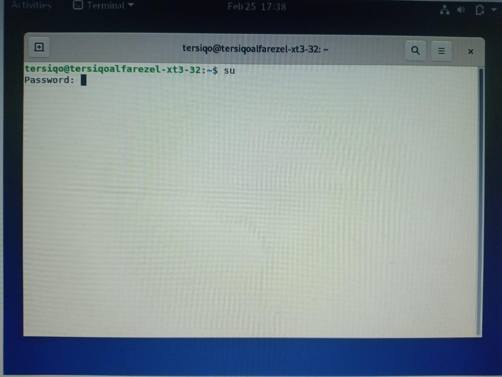
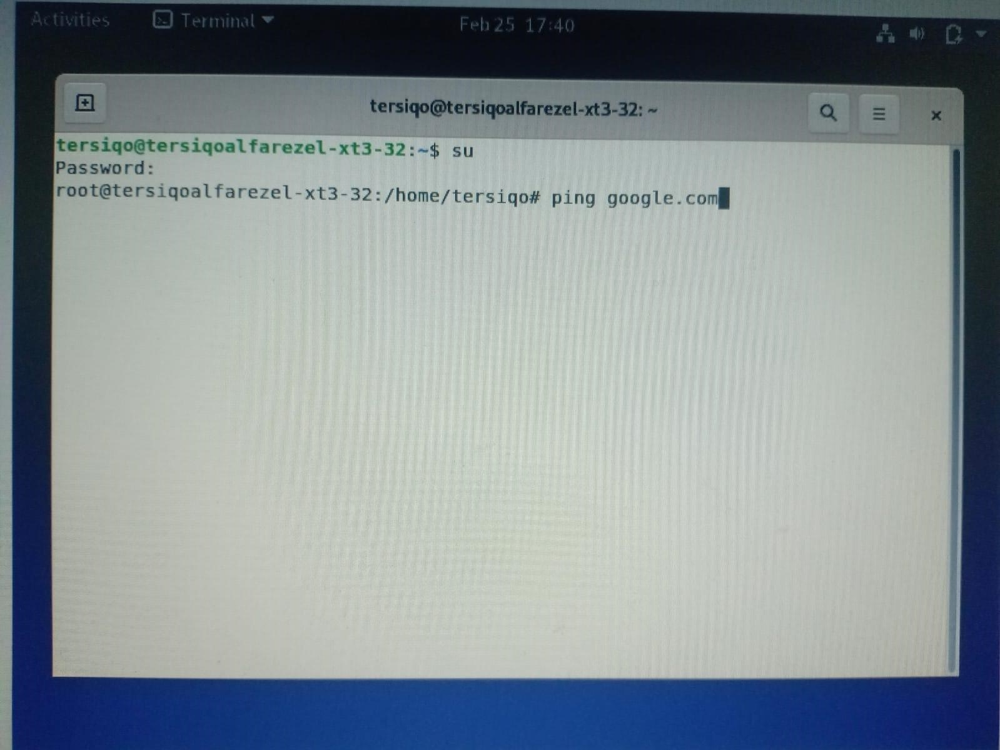
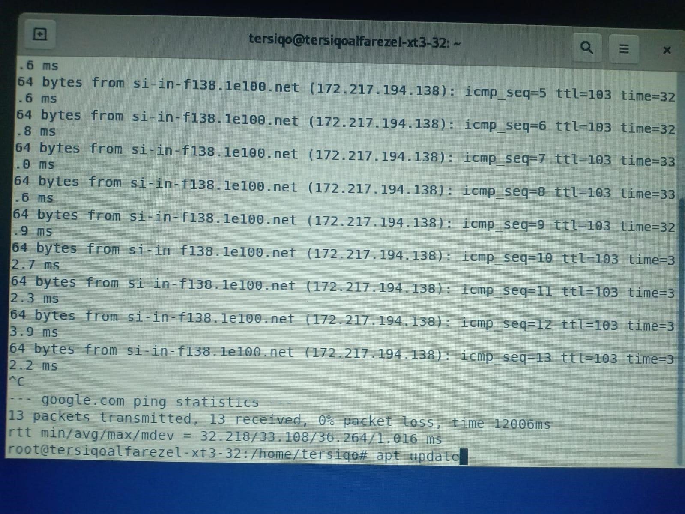
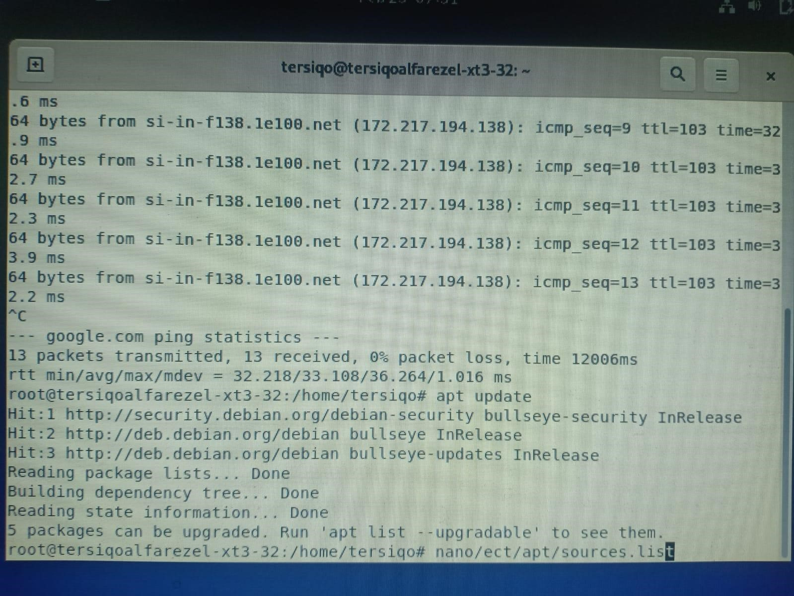
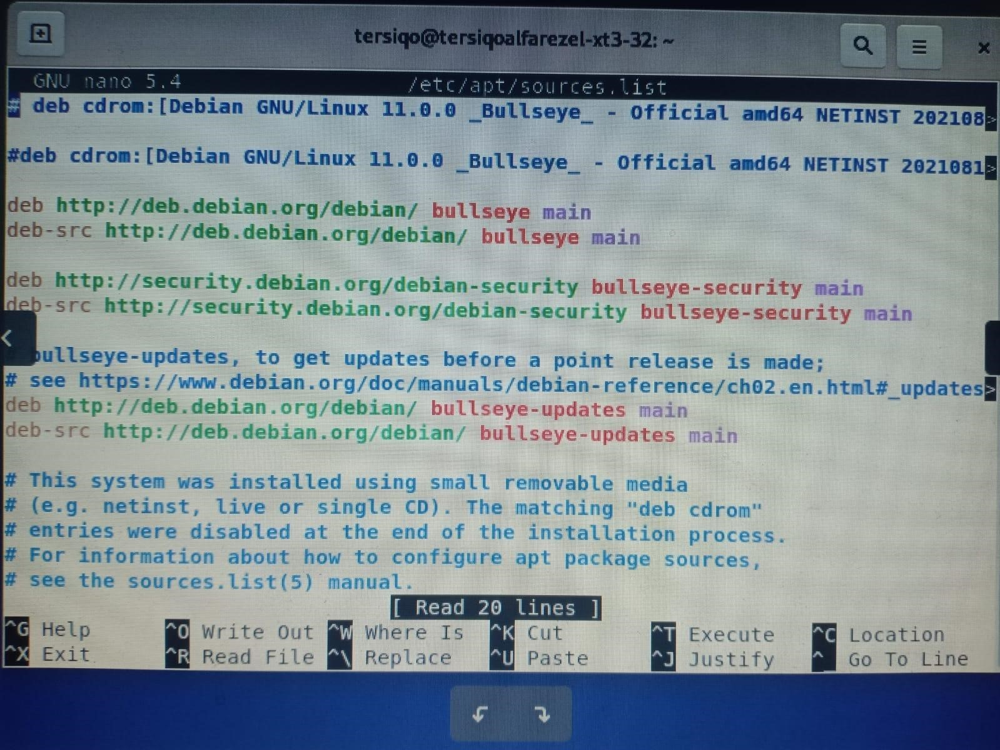
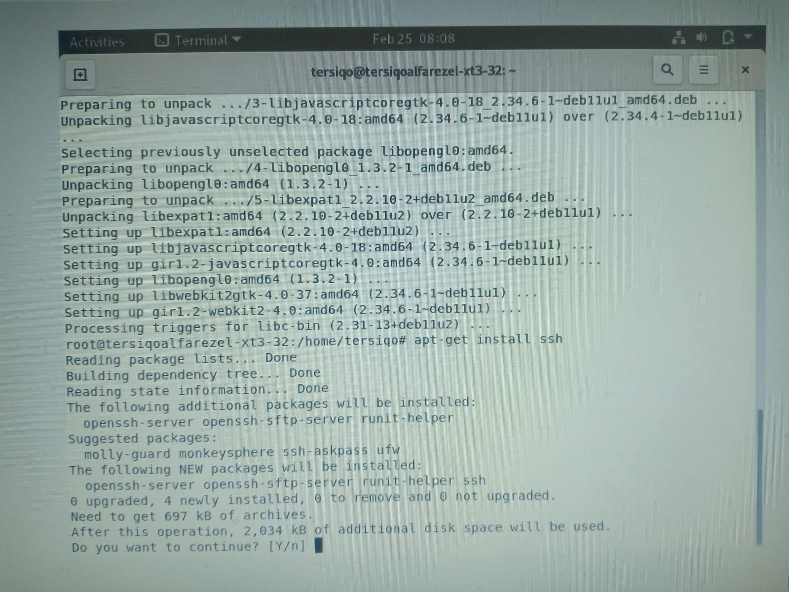
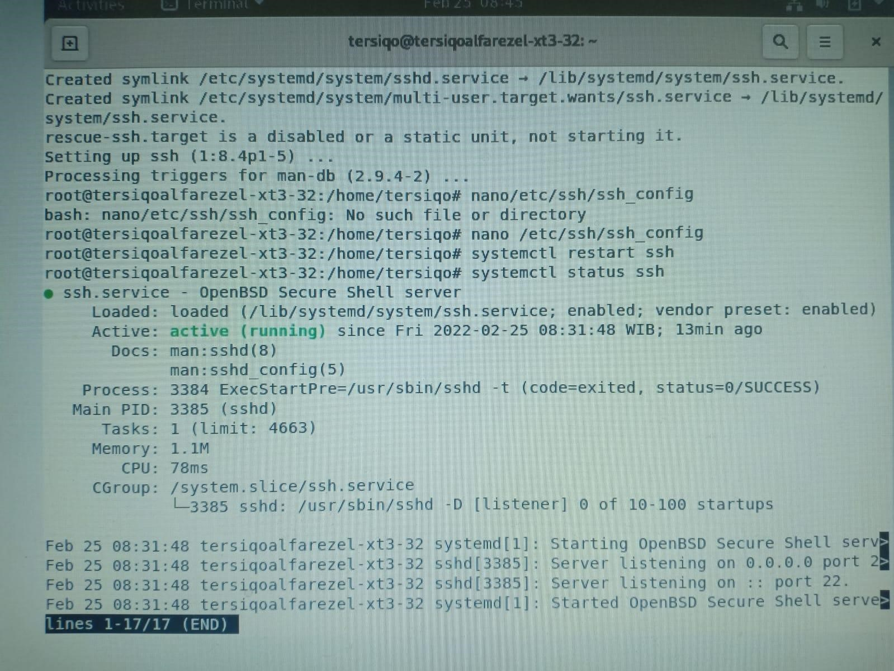

Langkah Pertama
ketik su lalu massukan password root
Langkah Kedua
ketik ping google.com lalu enter
Langkah Ketiga
ketik ctrl+c lalu ketik apt update
Langkah Keempat
ketik nano/ect/apt/sources.list lalu enter
Langkah Kelima
ketik data repository lokal yaitu di paling bawah deb http://kartolo.sby.datautama.net.id/debian/ stretch main contrib non-free deb http://kartolo.sby.datautama.net.id/debian/ stretch-updates main contrib non-free deb http://kartolo.sby.datautama.net.id/debian-security/ stretch/updates main contrib non-free tekan ctrl+x lalu tekan y 6.
Langkah Keenam
ketik apt update dan enter
Langkah Ketujuh

ketik nano/ect/apt/sources.list dan enter
Langkah Kedelapan
ketikkan apt upgrade lalu enter, jika sudah ketikkan apt-get instal ssh dan enter
Langkah Kesembilan
jika sudah ketikkan nano /etc/ssh/ssh_config dan enter, lalu cari port 22 dan hapus tanda # dan ketik ctrl+x dan y.jika sudah ketikkan systemctl restart ssh dan enter lalu ketikka systemctl status ssh dan enter. jika sudah tertulis active(running) maka ssh sudah berhasil di install